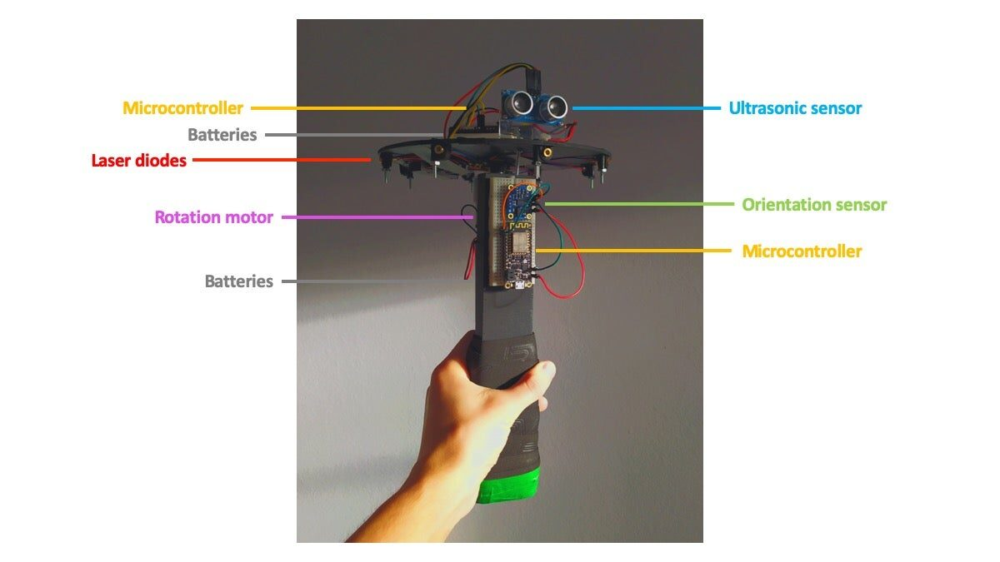
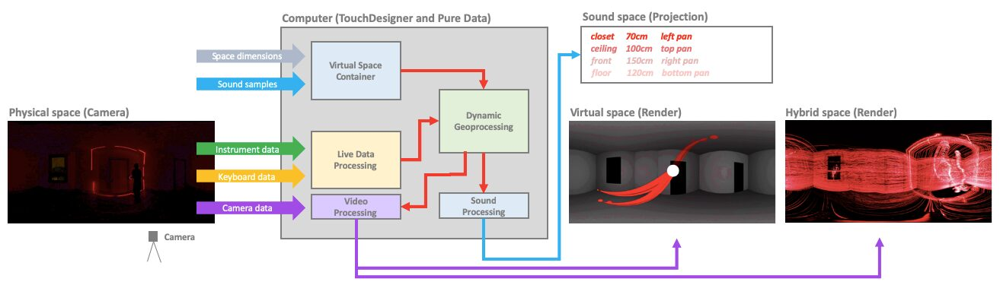

Hybridization No. 1: Standing at the Boundary between Physical and Virtual Space
Abstract
Hybridization No. 1 is a wireless hand-held rotary instrument that allows the performer to simultaneously interact with physical and virtual spaces. The instrument emits visible laser lights and invisible ultrasonic waves which scan the architecture of a physical space. The instrument is also connected to a virtual 3D model of the same space, which allows the performer to create an immersive audiovisual composition that blurs the limits between physical and virtual space. In this paper I describe the instrument, its operation and its integrated multimedia system.
Author Keywords
Hybrid space, Real-time Audiovisual Performance, Sound and light, New Interfaces
CCS Concepts
•Applied computing → Media arts; Sound and music computing; •Information systems → Spatial-temporal systems;
Introduction
Hybridization No. 1 is a new interface for audiovisual expression designed to create a poetic hybridization between physical and virtual spaces through the body of the performer. Technology plays a fundamental role in our understanding of time and space and inevitably new technologies or devices play a role in redefining preconceived notions of space. We live in a “hybrid space” where the distance between physical and virtual spaces is eliminated through technology [1].
Horn and Riskin have explored the connection between body and space through the use of body-extensions or bodily attachments that fill the “empty space between body and space” [2][3][4]. Hybridization No. 1 is a first attempt to explore these relationships through a digital musical instrument. Through this instrument, the performer can directly interact with and create a hybrid space, i.e. the space that emerges from intersection between physical and virtual spaces. The instrument poetically creates an anchor point in which performer, physical place and virtual space converge. This point, or origo, is a reference to the concept of deictic centre used in linguistics to identify the centre of a coordinate system of perception from which a speaker can organise and orient their discourse in spatio-temporal terms [5].
Hybridization No. 1
Hybridization No. 1 consists of a central wireless controller composed by a handle and an attachable rotary disc (Image 1). The handle has a BNO055 orientation sensor that measures the orientation of the controller in 3D space. The instrument operates in a similar way to a RPLIDAR [6], as it uses rotation and a central point to create a digital model from which a simplified version of physical space can be “reconstructed”, thanks to its geometric and topological properties [7]. The rotary disc has eight 650nm 5mW laser diodes. The rotation of the lasers create a wall of light that illuminates cross-sections of the performance space. The rotary disc also has a HC-SR04P ultrasonic sensor that measures distances between the controller and the performance space. The controller also uses two Feather HUZZAH ESP8266 microcontrollers for wireless transmission of the sensor’s data, as well as batteries to power all of the controller’s components.


Hybridization No. 1: Wireless controller.
The orientation of the wireless controller is mapped to a 3D model of the performance space. This model also maps sound samples of the physical performance space to the surfaces of its virtual counterpart. Likewise the ultrasonic data is sonified with pulses. Thus, as the performer traverses the physical space with the instrument and projects the spinning lasers onto the surfaces of the space, rhythmic sequences emerge from the combination of sound samples of the surfaces and the sonification of the distances between performer and the surfaces, which become faster as the performer approaches them. Furthermore, different rhythmic patterns emerge as the orientation of the controller is shifted around. The performer can also experiment with different combinations of parameters (speed of rotation and angle of rotation of the sequencer) that modify the resulting soundscape and rhythms.
In addition to the wireless controller, at least one camera watching the performance’s space is needed. This data, as well as the controllers data are integrated and processed with two patches (TouchDesigner and Pure Data), which produce three videos: the direct performance space (physical space), a render of the virtual space and a render of the hybrid space (Image 2).
The system can also receive commands through a 19-key Bluetooth numeric pad for the remote control of several audiovisual parameters of the interface remotely.


Hybridization No. 1: Integrated multimedia system.
This paper includes a tryptic video (see video 1) that shows the three different spaces of a performance (physical, virtual and hybrid space). The performance space is an empty bedroom of around 36 m3, divided into ten surfaces. The sound space is composed of ten short sound samples from contact microphone recordings of mechanical gestures over the surfaces of the performance space. The performer follows a simple path holding the controller in their hand. The main changes in the orientation of the controller are mapped to different presets of the instrument, which modify the audiovisual output of the interface. The data from the instrument is recorded through the system.
Video 1
Hybridization No. 1: Demo - Three different spaces of a performance (physical, virtual and hybrid space)
Conclusions
Hybridization No. 1 is an exploration of the concept origo and the emergence of hybrid spaces. The movement of the performer through both physical and virtual spaces is an essential component of the performance with the instrument. The instrument also aims to allow the performer to “carry” their soundscapes with them and to explore musical expression through spatial interactions. Each space may contain a different soundscape which may provide a multitude of ways of making a musical performance within that space. The light projection automatically adapts to any space and, when processed by the system, it can also be used to create live superposition effects on the hybrid space (see Video 1). A slight caveat of the laser light projection is that it requires controlled light conditions.
The main limitation of the interface is the anchoring of the origo to the center of the 3D model, which somewhat restricts the freedom of movement of the performer in the physical space in which the instrument is played. This might be adjusted by tracking the position of the instrument in three-dimensional space through data processing from the camera and the already used sensors. The orientation sensor could also be used to integrate hand gestures to change the parameters of the interface. Nevertheless, the video capabilities of the interface make it an ideal interface for online performances.
Another area of further exploration is to observe the interaction with an audience within the performance space. In the future, we aim to explore whether Hybridization No. 1 can be deployed in an installation context where the public can create their own hybrid spaces using the instrument.
Acknowledgments
I thank Ana Dall’Ara-Majek (University of Montreal) for her comments as a supervisor of the project. I thank the Specialized Graduate Program in Fine Arts and Creative Technologies, the Faculty of Arts and Science and the Faculty of Music of the University of Montreal for providing a platform for the development of this project. I also thank Santiago Tavera, multimedia artist, for assisting the prototyping of the instrument and Juan Martinez Avila (NIME Diversity Officer and University of Nottingham) for his support with the editing of this paper.
Citations
- ↩Rajendran, L. P., & Odeleye, N. D. (Eds.). (2020). Mediated Identities in the Futures of Place: Emerging Practices and Spatial Cultures. Springer Series in Adaptive Environments. Springer International Publishing. https://doi.org/10.1007/978-3-030-06237-8
Art Basel. (n.d.). How Rebecca Horn expanded the boundaries of the human body. https://www.artbasel.com/news/rebecca-horn-museum-tinguely-koerperfantasien-art-basel
↩- ↩Riskin, S. (2020). Light Dance. Leonardo, 53(1), 90–91. https://doi.org/10.1162/leon_a_01636
SFCI. (1991). Archives: 6 Versions of Seth Riskin’s Light Dance. https://vimeo.com/27346668
↩- ↩Stukenbrock, A. (2014). Pointing to an ‘empty’ space: Deixis am Phantasma in face-to-face interaction. Journal of Pragmatics, 74, 70–93. https://doi.org/10.1016/j.pragma.2014.08.001
Slamtec. (2020). RPLIDAR 360 Laser Range Scanner. https://www.slamtec.com/en/Lidar/A1
↩Longley, P. et al. (2005). Geographic Information Systems and Science, 2nd edition. John Wiley & Sons, Ltd. ISBNs: 0-470-87000-1 (HB); 0-470-87001-X (PB)
↩